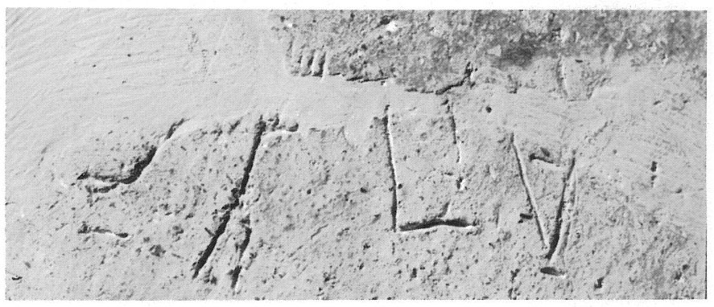
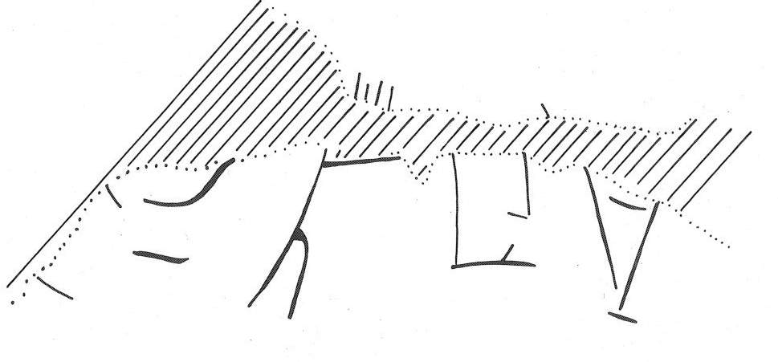

-
HTZb158a
Names
HTZb158a, HT Zb 158a
Support
Clay vessel
Location
Haghia Triada
Findspot
Villa Magazine Room 5


Scribe
Unavailable
Context
Late Minoan IB
1500-1450 BCE
Dimensions
Catalogue
Hiraklion Museum
Readings
1 1 0 *900 none
1 1 1 TU none
1 1 1 SE none
1 1 1 SU none
1 1 1 KI none
𐄁𐘹𐘈𐘲𐘸
*900TUSESUKI
𐄁𐘹𐘈𐘲𐘸
*900TUSESUKI
HT Zb 158
(HM 3915) (GORILA IV: 64-65), pithos (Villa Magazine
5)
a: ][•]-
TU
-SE-SU-KI
b: SU-KI-RI-TE-I-JA
Commentary © John Younger
References
papers/GORILA-Vol4.pdf#page=108